Introduction
A service mesh separating applications from network functions like resilience, fault tolerance, etc,.
A service mesh addresses the below functions without changing the application code.
-
Test the new versions of services without impacting the users.
-
Scale the services.
-
Find the services with the help of service registry.
-
Test against failures.
-
Secure service-to-service communication.
-
Route traffic to a specific way.
-
Circuit breaking and fault injection.
-
Monitor the services and collect matrices.
-
Tracing.
ISTIO service mesh is an open environment for Connecting, Securing, Monitoring services across the environments.
ISTIO Architecture
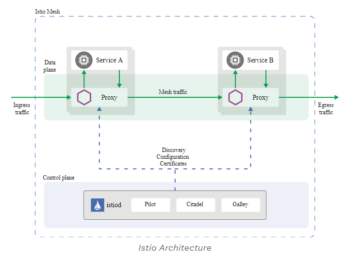
ISTIO is split into data plane and control plane. Refer ISTIO Architecture
Data Plane
The data plane is a set of intelligent proxies (Envoy) deployed as sidecars that mediate and control all network communication among microservices.
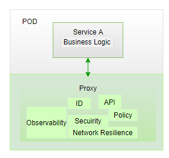
Control Plane
The control plane is managing and configuring proxies to route traffic and enforcing policies.
-
Pilot manages all the proxies and responsible for routing
-
Mixer collects telemetry and policy check
-
Citadel does Certificate management (TLS certs to Envoys)
ISTIO installation
Download ISTIO from releases
istioctl install --set profile=demo
Here used demo profile, there are other profiles for production.
Verify installation:
kubectl get all -n istio-system
Inject sidecar container automatically by issuing the below command.
kubectl label namespace default istio-injection=enabled
Verify:
kubectl get namespace -L istio-injection
For more installation guides, refer ISTIO Installation
Traffic Management
ISITO’s traffic management model relies on the Envoy proxies which deployed as sidecars to services.
Below are the traffic management API resources
-
Virtual Services
-
Destination Rules
-
Gateways
-
Service Entries
-
Sidecars
A virtual service, higher level abstraction of Kubernetes Service, lets you configure how requests are routed to a service within an Istio service mesh. Your mesh may have multiple virtual services or none. Virtual service consists of routing rules that are evaluated in order.
Dark Launch
The following virtual service routes requests to different versions of a service depending on whether the request comes from a testuser. If the testuser calls then version v1 will be used, and for others version v2.
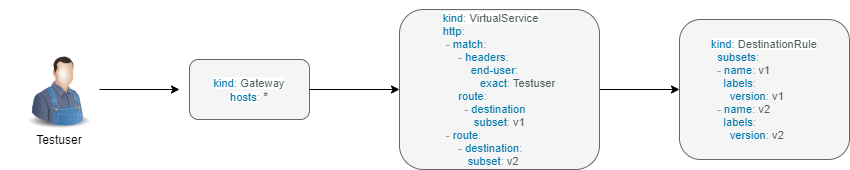
Blue/Green deployment
In blue/green deployment two versions of the application running. Both versions are live on different domain names, in this example it is mtsj.com and test.mtsj.com.
-
Define 2 virtual services for mtsj v1 and v2 versions.
-
Define DestinationRule and configure the subsets for v1 and v2.
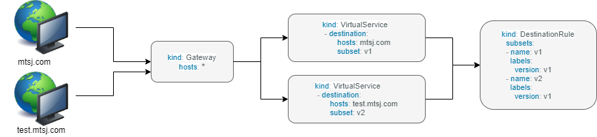
When end user browses mtsj.com, the gateway call goes to subset v1 of the virtual service and redirects to destination version v1, and for test.mtsj.com to version v2.
Canary Deployment (Traffic Splitting)
In canary deployment old and new versions of the application alive. ISTIO can be configured, how much percentage of traffic can go to each version.
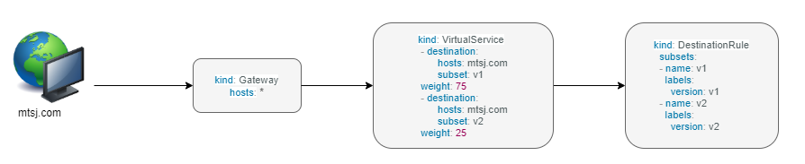
Here, the traffic is divided 75% to the version V1, and 25% to the version V2, as we gain confidence the percentage can be increased the latest version and gradually the traffic to the old version can be reduced and removed.
You may refer ISTIO Traffic Management for more details.
== MyThaiStar Implementation
In this example dish will have two versions and the traffic will be routed alternately using the ISTIO configuration.
Find all configuration files in istio/trafficmanagement/canary directory under mythaistarmicroservices example.
-
MyThaiStar defines below
-
Service
-
Service Account
-
Deployment
-
The above configurations are defined in a single yaml file for all the different services like angular, dish, image etc.
-
dish-v2: Dish Version 2 can be kept separately in different yaml file.
-
mts-gateway defines the ingress gateway which routes the outbound request to each service.
-
destination-rule-all defines the subsets here for later traffic routing
-
dish-50-50: traffic routing for different versions of dishmanagement.
== Timeout
Istio lets you adjust the timeouts using virtual services. The default timeout is 15 seconds.
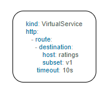
== Retry
A retry setting specifies the maximum number of times an Envoy proxy attempts to connect to a service if the initial call fails.
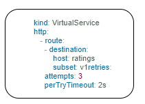
Retries can also be configured on Gateway Error, Connection failure, Connection Refused or any 5xx error from the application.
retryOn: gateway-error,connect-failure,refused-stream,5xx
== Circuit Breakers
By defining the destination rule, set limits for calls to individual hosts within a service, such as the number of concurrent connections or how many times calls to this host have failed once the limit reached.
-
Outlier Detection is an ISTIO Resiliency strategy to detect unusual host behaviour and evict the unhealthy hosts from the set of load balanced healthy hosts inside a cluster.
-
If a request is sent to a service instance and it fails (returns a 50X error code), then ISTIO ejects the instance from the load balanced pool for a specified duration.
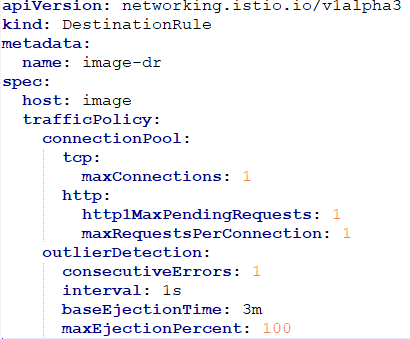
== Fault Injection
Two types of faults can be generated using ISTIO. This is useful for the testing.
Delays: timing failures.
Aborts: crash failures.
Below example is a crash failure Virtual Service. The below example configured to receive http status 500 error for the testuser. The application works fine for all other users.
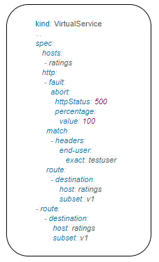
The below virtual service configured to wait 10s for all requests.
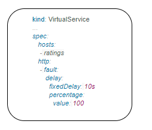
Security
ISTIO provides security solution has the below functions.
-
Traffic encryption
-
Mutual TLS and fine-grained access policies.
-
Auditing tools
Authentication
ISTIO provides two types of authentication.
-
Peer authentication, secures service to service authentication
-
Request authentication is end user authentication to verify credential attached to the request.
Mutual TLS Authentication
By default, the TLS protocol only proves the identity of the server to the client. Mutual TLS authentication ensures that traffic has been traffic is secure and trusted in both the directions between the client and server.
All traffic between services with proxies uses mutual TLS by default.
Peer Authentication
Peer authentication has Permissive, Strict and Disabled mode. With permissive mode, a service accepts both plain text and mutual TLS traffic. Permissive mode is good at the time of onboarding and should switch to Strict later.
The authentication policy can be applied to mesh-wide, namespace wide or workload specific using the selector field.
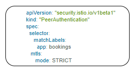
Here the policy applied to the workload bookings.
Check the default mesh policy:
kubectl describe meshpolicy default
Request authentication
Request authentication policies specify the values needed to validate JWT tokens.
|== = |Authentication |Applies to |Uses |Identity |Peer authentication |Service to service |mTLS |source.principal |Request authentication |End User authentication |JWT |request.auth.principal |== =
Authorization
Apply an authorization policy to the workload/namespace/mesh to enforce the access control. Supports ALLOW and DENY actions.
== Deny All
Below example authorization policy without any rules denies access to all workloads in admin namespace.
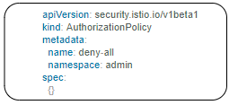
Example below allowing the GET methods from order service.
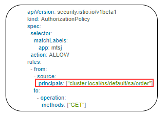
Example below denies the request to the /registered path for requests without request principals.
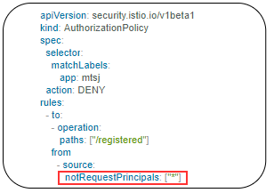
You may refer ISTIO Security for more details.
Observability
ISTIO generates
-
Metrics - for monitor latency, traffic, errors and saturation.
-
Distributed Traces to identify call flows and service dependencies
-
Access Logs enables audit service behaviour to the individual service level.
Grafana dashboard
Grafana and Prometheus are preconfigured addons on ISTIO. To enable, choose the configuration profile which has Prometheus and Grafana enabled. Eg: Demo profile
Verify Prometheus and Grafana running in the cluster.
kubectl get pods -n istio-system
Kiali dashboard
The Kiali dashboard helps you understand the structure of your service mesh by displaying the topology. The demo profile enables Kiali dashboard also.
Access the Kiali dashboard. The default user name is admin and default password is admin.
istioctl dashboard kiali
You may refer ISTIO Observability
Minikube Troubleshooting Tips
This documentation provides the troubleshooting tips while working with minikube in a local machine.
-
Always start minikube with a minimum of 4GB of memory or more if available. Using command
minikube start --memory=4096 -
If minikube is not starting or throwing any error even after multiple attempts. Try the below tips:
-
Delete the minikube in your local machine using
minikube deleteand do a fresh minikube start. -
In any case, if minikube is not starting even after the above step, go to .minikube folder under the users directory and delete it manually. Now try starting minikube.
-
-
Set docker environment in minikube using
minikube docker-env. Now all the docker commands that are run will be on the docker inside minikube. So building your application after executing the above command will have the application docker images available to minikube.-
To exit minikube docker environment use
minikube docker-env -u
-
-
In any case, if you face any error related to docker image such as
Failed to pull image, orimage not founderrors we will have to manually push the application docker image to minikube docker cache using the below commands. -
For better results - stop minikube using
minikube stopcommand. -
Execute the command
minikube cache add imageName/tagName. -
Now start the minikube. To verify if the docker image has been added to minikube docker execute
minikube ssh docker images. -
To remove any docker image from minikube docker stop any containers running that docker image and then execute
minikube cache delete imageName/tagName. -
To reload any docker image to minikube docker environment, execute
minikube cache reload. -
In any case, if the docker images are not getting removed from minikube docker environment then navigate to .minikube/cache/images and then delete the particular image.
Execute the below command to make the Grafana available.
kubectl -n istio-system port-forward $(kubectl -n istio-system get pod -l app=grafana -o jsonpath='\{.items[0].metadata.name}') 3000:3000 &
Use the below URLs to view the dashboard in local machine.